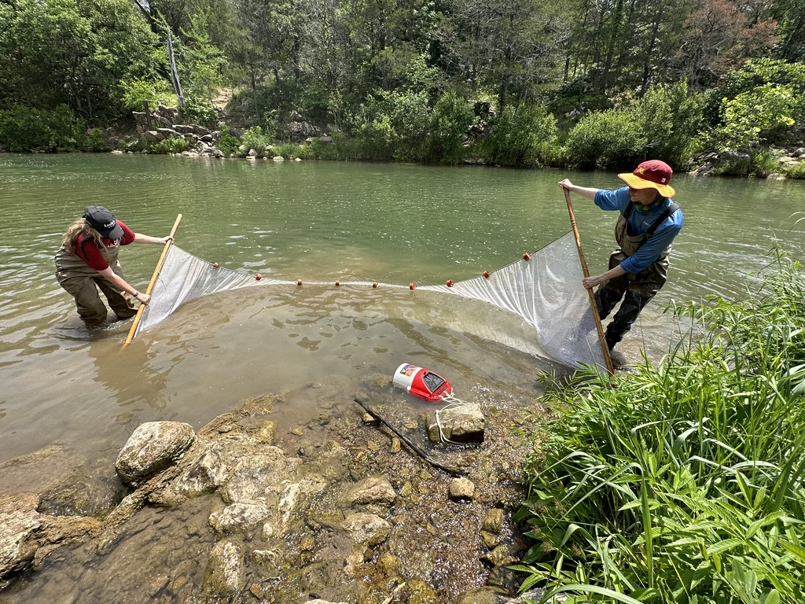
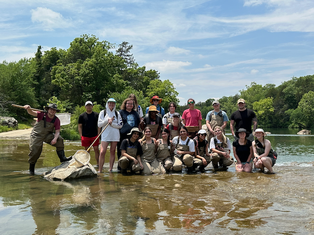
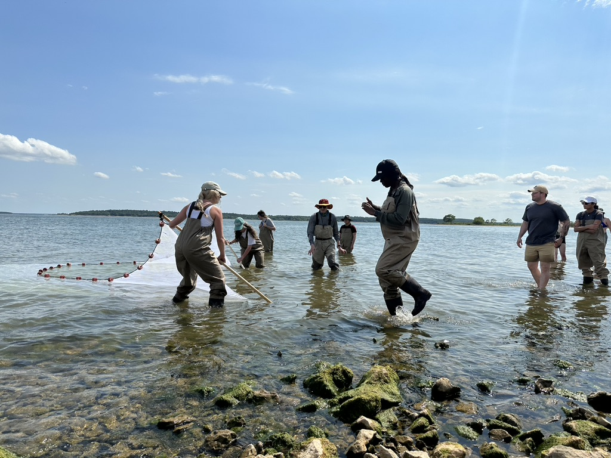
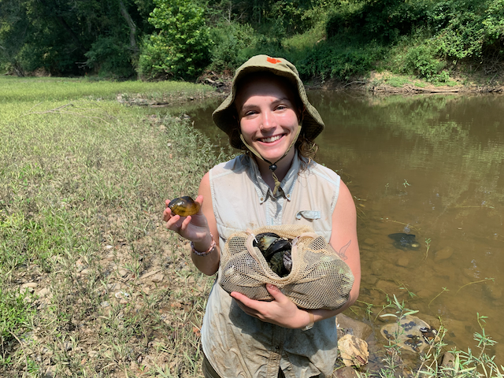
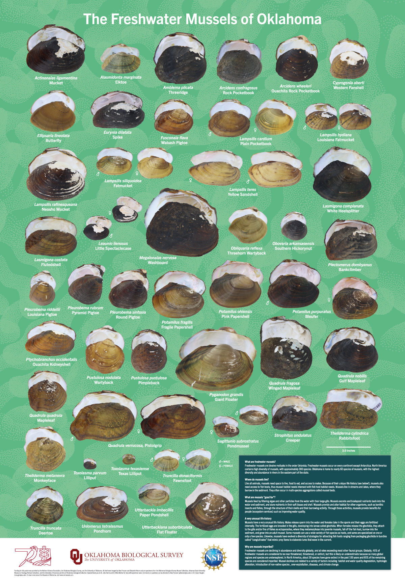

Teaching and Outreach
Teaching
As a teacher, my goals are to: (1) convey that science fundamentally requires critical thinking skills, (2) teach that ecology is an interdisciplinary subject that requires a diversity of knowledge to interpret data and make conclusions, and (3) demonstrate that inclusiveness and collaboration are vital to the scientific process. One of the most fulfilling aspects of my career is helping students feel empowered to contribute their knowledge and experiences to the class and develop their research independence in a welcoming, culturally informed environment. Working with students from diverse backgrounds has taught me the importance of gaining multiple perspectives when investigating difficult problems in science.




Outreach
